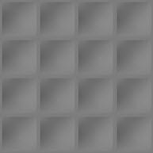
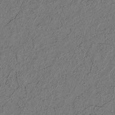
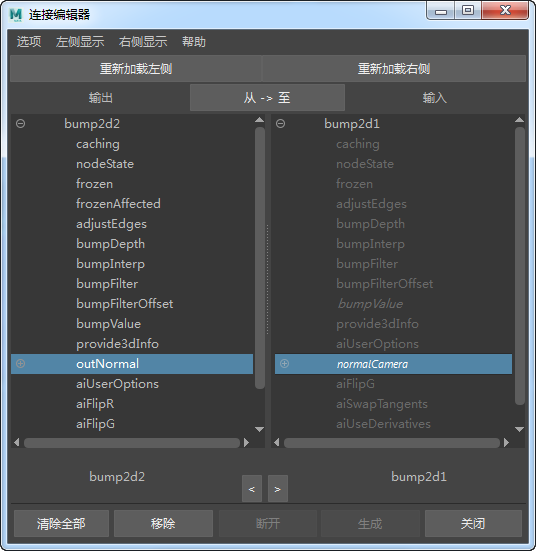
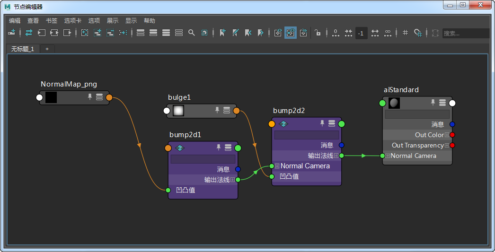
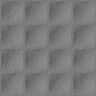

本简单教程演示如何将法线贴图和凹凸贴图一起合并在一个着色器中。如果您在 Maya 中向某个着色器添加了一个法线贴图，默认情况下，它将自己连接到“凹凸”(Bump)属性。此方法也可用于合并两个法线贴图。
有关对应的 Maya 场景，请单击此处。
|  |  |
| 法线贴图 | 凹凸贴图 |
要合并两个 bump2d 节点，您必须将第一个 bump2d 节点的 outNormal 连接到第二个节点的 normalCamera。这可以通过“连接编辑器”(Connection Editor)来完成（请务必启用“显示隐藏项”(Show Hidden)，这样才能看到 normalCamera 属性）。

必须先将凹凸节点连接到 standard_surface 着色器，然后才能向它添加法线贴图节点。

OutNormal（第一个 bump2d 节点）连接到 normalCamera（第二个节点）

凹凸贴图和法线贴图合并后的效果